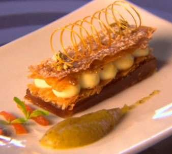

Deconstructed Milk Tart with Warm Apple Moes

Arlette — Heat the oven to 200°C.
Place the Puff Pastry onto a large sheet of parchment paper.
Roll out as thin as possible, dusting with Icing Sugar frequently.
Cut in half, once paper-thin dough has been achieved through the rolling out process.
Place each half on a baking sheet, cover with another layer of baking paper.
Sandwich the pastry with between two baking trays.
Bake for about 15-20 minutes, until golden brown and Sugar has caramelized.
Remove from the oven, and while still hot, cut into rectangles measuring 3cm by 8cm and allow to cool.
Apple moes — Bring all ingredients, except the Basil to the boil.
Simmer until Apples are soft.
Drain, and pass apples through a Sieve.
Blend the Apples with the Basil Leaves until a smooth paste has been achieved.
Reserve the drained juices for the Gel.
Apple gel — Bloom the Gelatine leaves in Water.
Bring the remaining ingredients to the boil, then add the soften Gelatine.
Pour into a lined mould to set.
Use the blast chiller to set.
Once set, cut into rectangles 3*8cm.
Milk custard — Heat the Milk with half the Castor Sugar until boiling.
Mix the Milk Powder and Corn Flour in a small bowl and make a smooth paste with 3 tbsp. of Milk.
Temper the remaining Sugar and Eggs Yolks, with hot Milk.
Pour Eggs Yolk and Corn Flour slurry into the hot Milk.
Simmer until thick and Corn Flour has cooked out.
Remove from heat, cover with cling wrap and chill.
Use the blast Chiller to set, then just before use place in Kenwood Chef.
With the K beater on high, beat until more airy, then place in piping bag.
Apricot boeremeisies — Heat the Brandy, Sugar and Apricots over a low heat.
Leave to steep, then cool and cut into strips.
Crystalized fennel seeds — Toast the Fennel Seeds over a medium heat in a non-stick frying pan.
Add the Sugar and as it melts, stir with a spatula.
Transfer to a parchment-lined tray and allow to cool.
Spun sugar — Bring Sugar and 3 tbsp. Water to the boil over medium heat, stirring until Sugar dissolves.
Cook over medium heat until the mixture turns into amber colour, and registers 150°C.
Plunge pot into ice to cool.
Allow Caramel to cool to about 94°C.
Grease a round metal tube, back of a metal spoon or whisk will do.
Take a spoonful of Caramel, and wind the Sugar strand around the bottom third of the metal tool, moving away from the edge you are holding it on.
Work quickly and smoothly continue to wind the sugar strand along the steel.
Allow the Sugar Spiral to cool for 20-30 seconds before you attempt to remove it.
Repeat the process for more spirals.
To plate — Place an Arlette rectangle on a plate.
Top with a rectangle of Apple Gel, followed by another Arlette rectangle.
Pipe the whipped Milk Custard in small mounds, making two rows.
Sprinkle the last Arlette with Icing Sugar, grate with Nutmeg and Cinnamon.
Place a final Arlette rectangle on top.
Add a couple of crystalized Fennel Seeds.
Smear some warm Apple Moes next to the Arlette on the plate and scatter with Basil and Apricot strips.
Gently place the Sugar Spirals on top of the Arlette.